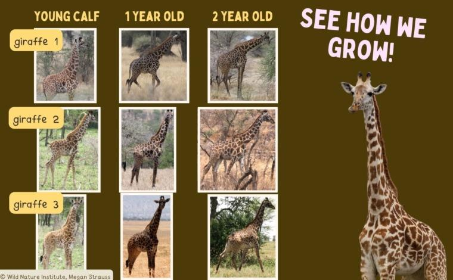

Las jirafas crecen muy rápido desde que nacen.
Una jirafa bebé mide aproximadamente entre 1.7 y 2 metros de altura.
Pueden pesar entre 50 y 70 kilogramos.
A los pocos minutos de nacer ya pueden ponerse de pie y caminar.
Las crías se alimentan de la leche de su madre.
También comienzan a comer hojas y plantas poco a poco.
Su cuello y patas continúan creciendo rápidamente.
Aprenden a buscar alimento en árboles altos.
Las jirafas adultas pueden medir entre 4 y 6 metros de altura.
Son los animales terrestres más altos del mundo.